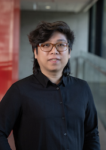

Dr Rob Sison
🔗
Senior Research Associate
School of Computer Science and Engineering (CSE)
UNSW Engineering
🔗
Honorary (Fellow)
School of Computing and Information Systems (CIS)
University of Melbourne

Summary
I research and develop formal methods, primarily for proving
absences of information flow in systems for high-assurance use cases.
In the past, my focus was on complications arising from concurrency and
refinement to enable secure compilation;
more recently, it has been on how to prove an OS enforces absences of information leaks through the microarchitecture.
More broadly, I am interested in
all applications of
interactive theorem proving, as well as
anything to do with the design and construction of software systems with
formally proved functional-correctness and security properties at scale.
About me
I am an Australian computer engineer who pivoted to formal methods research
after a 5-year early career stint (2008-2014) as an OS-level software
developer with NICTA spin-out Open Kernel Labs, Inc.
(including following its acquisition
by General Dynamics C4 Systems).
My long-term objective since 2014 has been to gain the skills, experience, and
qualifications necessary to assist, conduct, and eventually lead groundbreaking
research and development aimed at improving the trustworthiness and reliability
of system-critical software.
To this end, in 2016 I completed a master's degree by coursework focused on
computer security and formal methods. In 2020, I attained my doctorate
for my dissertation on the
application of interactive theorem proving to make feasible the
verification of both
information-flow security and its preservation by a compiler for
concurrent programs that share memory both (1) between threads and
(2) between security domains.
From 2020 to 2023 I was proud to work
as a postdoctoral Research Fellow for
the CS Security Research group of
The University of Melbourne's
School of Computing and Information Systems (CIS),
in close collaboration with
the Trustworthy Systems research group of UNSW Sydney's School of Computer Science and Engineering (CSE), my alma mater,
aimed at the provable elimination of information leakage through timing channels (ARC DP190103743).
Since 2023 I have held the position of Senior Research Associate working with the Trustworthy Systems research group at UNSW Sydney's School of CSE and an Honorary (Fellow) position with the University of Melbourne's School of CIS.
I am a trans nonbinary person and in professional contexts prefer Rob and they/them but otherwise don't care what pronouns you use for me.
Research supervision
I am happy to co-supervise anybody who is interested in a pursuing a Higher Degree Research candidature on any of the topics in my area of research.
Please contact me by email at my institutional email address to discuss our research interests and your circumstances.
If you have a professional online presence, especially hosted or verified by any institutional websites (e.g. employer or university), public code repositories (e.g. GitHub) or publication databases (e.g. DBLP), please include any links to those.
Other contact
On other professional matters, feel free to email me at either of my institutional or personal email address - no unsolicited attachments please.
Institutional pages
Teaching - UNSW Sydney
- COMP3161/9164 Concepts of Programming Languages (T3 2024), co-lecturer
- COMP4161 Advanced Topics in Software Verification (T3 2023, 2024), co-lecturer
Current research students
- Pengbo Yan, PhD student (with Toby Murray and Olya Ohrimenko), The University of Melbourne
- Kevin Tran, PhD student (with Johannes Åman Pohjola and Gerwin Klein), UNSW Sydney
- Junming Zhao, PhD student (with Thomas Sewell and Gernot Heiser), UNSW Sydney
- Kurt Wu, Master's research project student, UNSW Sydney
- Mathieu Paturel, Honours thesis student, UNSW Sydney
Selected peer-reviewed publications
- Latest lead-authored:
R. Sison, S. Buckley, T. Murray, G. Klein and G. Heiser, "Formalising the Prevention of Microarchitectural Timing Channels by Operating Systems," 25th International Symposium on Formal Methods (FM), pp. 103-121, 2023. doi: 10.1007/978-3-031-27481-7_8.
- Journal article on PhD work:
R. Sison and T. Murray, "Verified secure compilation for mixed-sensitivity concurrent programs," Journal of Functional Programming, vol. 31, p. e18, 2021. doi: 10.1017/S0956796821000162.
- Doctoral dissertation:
R. Sison, "Proving Confidentiality and Its Preservation Under Compilation for Mixed-Sensitivity Concurrent Programs," PhD thesis, University of New South Wales, Sydney, 2020. doi: 10.26190/5fab5c0a76454.
- Most cited:
T. Murray, R. Sison, E. Pierzchalski and C. Rizkallah, "Compositional Verification and Refinement of Concurrent Value-Dependent Noninterference," IEEE 29th Computer Security Foundations Symposium (CSF), pp. 417-431, 2016. doi: 10.1109/CSF.2016.36.
Proof artifacts and contributions
Other publications listings
Awards and recognition
Community participation
- PLDI Review Committee (PLDI 2025), committee member
- ACM Transactions on Privacy and Security (TOPS 2024), reviewer
- seL4 Summit 2024, presenter (slides)
- PLAS Program Committee (PLAS 2024), committee member
- Future Communications Workshop @ Macquarie University (2024), presenter
- Workshop on Formal Methods in Australia/New Zealand (FM-Oz/NZ 2024), presenter (slides)
- ECOOP Artifact Evaluation + Extended Review Committees (ECOOP 2024), committee member (AEC, ERC)
- 2024 Australasian Computer Science Week (ACSW) EnCore Talks, presenter
- PLDI Review Committee (PLDI 2024), committee member
- Workshop on Formal Methods in Australia/New Zealand (FM-Oz/NZ 2023), presenter (slides)
- 25th International Symposium on Formal Methods (FM 2023), presenter (slides)
- Southern Summer School on Systems and Software Security (SSS2 2023), presenter (slides)
- OOPSLA External Review / Artifact Evaluation Committee (SPLASH 2023), committee member
- Trustworthy Systems group Monday talks @ UNSW Sydney (2022), schedule organiser
- OOPSLA Artifact Evaluation Committee (SPLASH 2021), committee member
- CIS research seminar program @ University of Melbourne (2021), presenter
- 10th International Conference on Interactive Theorem Proving (ITP 2019), presenter
- Marktoberdorf Summer School 2018 (Engineering Secure and Dependable Software Systems), attendee
- 2nd DeepSpec Summer School on Verified Systems (DSSS 2018), attendee
- Programming Languages Mentoring Workshop (PLMW @ POPL 2018), attendee
- 2nd Workshop on Principles of Secure Compilation (PriSC @ POPL 2018), presenter
Change history
 https://orcid.org/0000-0003-0313-9764
https://orcid.org/0000-0003-0313-9764